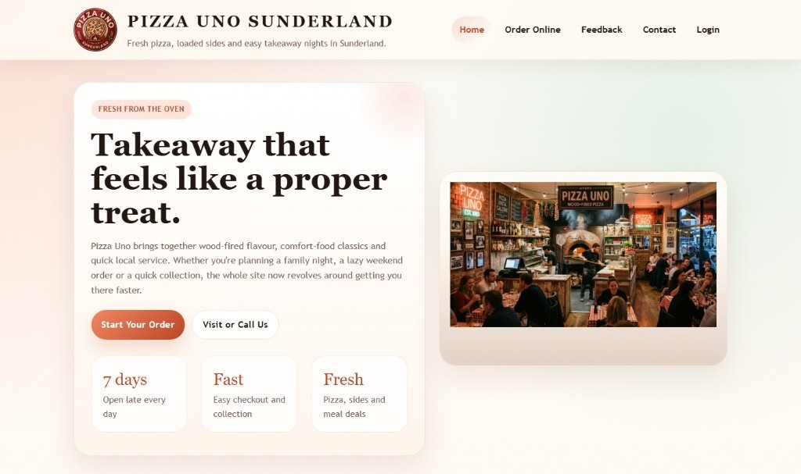

Pizza Uno Web Development & Implementation
This project takes the Pizza Uno work from diagnosis into delivery. After identifying issues in the original site, I rebuilt the experience with a stronger focus on clarity, customer flow, and practical front-end execution.

Project Story
The project goal was simple: reduce friction between landing on the site and placing an order. The rebuild focused on usability, communication, and a cleaner path through the experience.
Challenge
Create a restaurant website that feels easier to navigate, easier to trust, and better aligned with the quick decision-making customers bring to food ordering.
Approach
Prioritise straightforward navigation, visible pricing, mobile-friendly layout, and a basket flow that supports quick, low-friction customer actions.
Outcome
A cleaner website that communicates offers more clearly, supports ordering behaviour better, and feels closer to a real customer-facing product.
Project Snapshot
This block makes the implementation easier to judge at a glance by calling out what I built, how I built it, and what practical improvement it aimed to create.
Build System
This visual strip makes the rebuild feel more complete by surfacing the implementation choices and staged thinking behind the finished screens.
Reduce friction in layout, navigation, and the path from homepage to menu interaction.
Create the core ordering, account, and trust-supporting pages needed for a stronger customer experience.
Use cleaner visuals and clearer hierarchy so the site feels more credible and action-oriented.
What Was Built
The implementation covers the main customer touchpoints needed for a small food business and keeps the experience deliberately simple.
Key Features
- Promotional home page with clearer value messaging
- Order page with basket interaction and live price updates
- Feedback and contact pages that support trust
- Account-oriented flow for returning customer convenience
Why It Matters
For employers, this project shows practical front-end thinking: identify the friction, redesign the journey, and build a cleaner experience around what users actually need to do.
Before and After Direction
Seeing the audit lens beside the rebuild makes the improvement story much easier to understand visually.
 Before
The audit phase focused on where the experience felt weaker in clarity, structure, and confidence.
Before
The audit phase focused on where the experience felt weaker in clarity, structure, and confidence.
 After
The rebuild responds with stronger hierarchy, more direct messaging, and a cleaner customer-facing flow.
After
The rebuild responds with stronger hierarchy, more direct messaging, and a cleaner customer-facing flow.
Interface Gallery
The implementation covered multiple customer touchpoints across the food-ordering journey.
 Home page and offers presentation
Home page and offers presentation Order flow and basket interaction
Order flow and basket interaction Feedback and customer engagement
Feedback and customer engagement Contact and location support
Contact and location support Customer account and retention touchpoint
Customer account and retention touchpointArchive Access
The original long-form report is preserved separately so the case study can stay clean while the deeper detail remains available.
If you want the original page-by-page breakdown and supporting observations, open the archived report version.